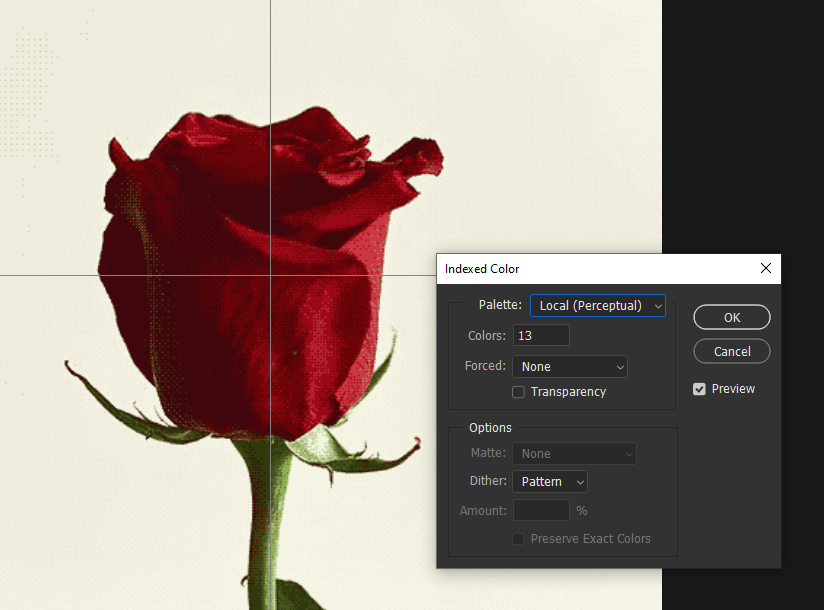
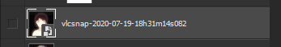

PREFACE
Before we dive into individual techniques, it's important to learn how to utilize your glitched assets to create stylized and coherent final pieces.
While you're welcome to just glitch shit and call it a day, I personally work to highlight the interesting parts of a glitch while hiding the more grating and unpleasant artifacts.
A lot of this is just basic image editing skills, but I think it'll be relevant to demonstrate what I often do to turn a fwuarked original into a polished work.
Now, a lot of these tricks and techniques are going to be very biased - this is going off a style I've personally developed over time, don't take these as hard rules for glitchart
(there are no rules when it comes to glitchart) but rather little recommendations of ways in which you can improve the clarity of your work.
Everything that I'm going to mention here will (if applicable) have information for both Photoshop and GIMP. While I mainly use Photoshop for all my work,
I still have massive respect for GIMP and believe that glitchart shouldn't be gate-kept behind any software. Hell, you could patch things up in MS paint for all I care!
DITHERING
Probably one of the most distinctly recognizable final touches of my personal styles, dithering is responsible for that classic "pixel art" look of images. In short, dithering is a computers way of forming gradients with
limited colours - it'll create the illusion of unique shades with patterns akin to that texture in newspaper prints (although that's called half toning, but it's a similar idea!). As old computers had limited
colour palettes, dithering was often used in pixel art to add shading and depth to images - contributing to that now classic look.
The kind of dithering we're going to focus on is
ordered dithering,
more specifically, Bayer Matrix dithering. This type of dithering has a much sharper pixel-perfect aesthetic that pairs especially well with animations (which we'll get to). If you want to see the difference between dithering algorithms,
wikipedia has a wonderful visual summary
Before we begin, do note that I purposefully work in low resolutions, 540x540 or smaller, as to maintain a pixel-arty low-fidelity look to my images. I do not scale my works until the very end! Because of this,
the dithering is significantly more noticeable. If you're following these steps and can barely notice the dithering patterns unless you zoom in super close, you're working with too big of an image!
DITHERING IN PHOTOSHOP
For this demonstration, I'm going to be working with this simple rose image I stole off google.
To start, select
Image > Mode > Indexed Color and click ok on "flatten layers". You should see a popup set of options like the one pictured below;
From here, make sure to set
dither to "Pattern", this corresponds to the Bayer dithering mentioned above. Cycle through the local/master palette modes to your taste,
they all have a slightly different way of picking colours. Lastly, you can enter a number of colours you want to restrict the palette to - play around with this until you get the desired clarity vs retro balance you want.
As a tip, you can also press the up/down arrows while the colours textbox is highlighted to bump the value up and down one.

Look at that cool dithered rose!
Now you'll notice that photoshop doesn't let you do anything with this dithered image, all the tools are grayed out! We need to convert it back to RGB before we can do anything.
Also, if you want to bring the dithered image back into your original project, click the little lock on the dithered layer, copy it and spam control Z to get back to your pre-dither state and paste the layer back in.
A trick I'll often do to enforce flatter colours with dithering with just on shaded areas is to run the dithered image through a second dithering pass. This second pass will have less colours and dithering turned off.
Doing this averages the dithered pattern colours to other existing ones - creating solid blocks of colour.
Lastly, let's talk custom palettes. You can enforce a custom colour palette by selecting "custom" in the palette dropdown. From here you can click on individual tiles to pick the colours to compose this palette.
You can also export/load palettes from this!
If you're struggling for to find inspiration for your own palettes, try websites like
coolors.co!
Additionally, I made a set of palettes to use with the
stardust gallery, you're welcome to download and use them;
Here's what our rose looks like with the moonlight palette loaded;
DITHERING IN GIMP
Dithering in GIMP is extremely similar to photoshop, you also simply go
Image > Mode > Indexed. Then, set the
Color dithering
mode to "Positioned" for the Bayer-Matrix style dither. Then, play with the number of colours / custom palettes!
Then, in order to start working with filters again, change the image mode back to RGB.
GIMPs dithering has one major difference from Photoshop -
GIMP doesn't merge the layers. This is a double-edged sword - while it dithers and preserves every layer individually, it also samples every layer for the colour palette (instead of the
composite image). This means that you can get some really awful colours for your dithered image, caused by other (often unseen) layers. For example, this is how GIMP will dither this lain image (the one I'll be using as an example in the next section);
To remedy this, duplicate your project with Ctrl+D, click an empty space in the layers box and select "New From Visible". Then, delete every layer except for the newly created composite one. Dither and copy this layer into your original project.
Doing this will instead make GIMP dither the image above to look much more consistent;
For the remaining stylization tricks, I'm going to be working with
this photoshop file, feel free to download and play around with it.
BLEND MODES
Check out this cool glitched image of Lain! Seems a bit harsh though, right?
One trick we can use to restore some coherence to our glitched image is
blending it with the source material.
Pasting in our original lain image and using the blend modes on the top of the layers stack let's us mix the two images together in interesting ways.
In all honesty, I know nothing about how each blend
mode actually works - so I just encourage you to cycle through them until you achieve a blend that looks good!
With our original image "hard light" blended into our glitched version, we now have a clearer image;
But nothing is stopping us from using blend modes like "subtract" to create stranger results!
LEVELS
Our image, even after blending, still has a ton of noise and unwanted artifacts. Especially the background! We want to focus on glitching Lain and it would be a pain to paint out that entire background. However, one thing that is handy
(that comes with this asset and style) is that backgrounds and unwanted artifacts are often much darker than the main image. We can utilize this contrast with the levels adjuster, cranking up the shadows end of levels will average out those darker
pixels into a solid matte-black background - removing the noise and better highlighting our glitched Lain image.
Photoshop has the advantage of adjustment layers, a type of layer that will apply to the visible composite of everything below it. One of these adjustment layers being for levels. You can add it by clicking the little semicircles icon on the bottom of the layer stack
and selecting "levels". From here, drag the leftmost arrow on the histogram towards the center - notice how shadows in the image average out and become black.
You can also post the rightmose white slider over to average out highlights into pure white.
To (destructively) apply levels to an individual layer you can go to Image > Adjustments > Levels
Just upping the shadows with levels a little bit instantly cleared out the weird noise in the background. This is especially helpful if you end up dithering your image, PS/GIMP will try to preserve the "detail" of this noise all the same,
which can lead to some pretty ugly dither texture on your image. Worse still is that this texture is no longer darker than everything else - making it a real eyesore!
Dithered, without levels
Dithered, with levels
Unfortunately, GIMP doesn't have adjustment layers. In order to achieve a similar effect, we'll have to do a little work-around. Similar to what we did for dithering a composite image, we need to click in the layers box
and select "New From Visible". From here, go to
Colors > Levels. The popup levels adjuster is very similar to photoshop, just pull the leftmost black arrow towards the center. This levels effect will
apply to just the composite image layer you just made, meaning that you'll have to redo this process if you change anything about your pre-levels image.
GIMP does have the cool advantage that you can use levels while in the "Indexed"/Dithered image mode - and it'll snap the shadow levels to your palette.
GRADIENT MAPS
Now we have a cool piece going, but I'm not exactly a fan of the turd-brown colourscheme we have. We could of-course use a custom palette for our dithering, but that doesn't give us a ton of interactive control of colourizing our
image in an interesting way. Instead, gradient-maps are a great method of colouring our image! As you could imagine from the name, gradient maps
map different brightness levels of an image to a gradient. Photoshop gives a ton of control over the gradient
we're mapping to with its gradient-editor, allowing us to completely change the look of our image.
Similar to levels, a gradient map can be applied as an adjustment layer in Photoshop. From here, double-click on the gradient rectangle in the properties tab to open the gradient editor. By default, (usually a b/w 2-colour gradient) the leftmost end is
mapped to black and the rightmost to white. Double-clicking the little coloured boxes under the gradient will allow you to change the colours. Clicking under the bar anywhere else will add a new marker for another colour.
double click the gradient here :^)
Now...
You can be boring and just add a black to single colour gradient for just a monochromatic look.
Or you can get quite creative. Notice my sudden jump to black in the middle of the gradient, this is done to map the midtones used for Lain's eyes to a darker colour and make them stand out.

GIMP is capable of applying gradient maps as a filter, but I suck at it sorry :^).
Here's their documentation on their gradient stuff xd
DISPLACEMENT MAPS
All this looks cool but still feels a bit... flat. After all this cleanup and colour mapping it still just feels like picture of lain with a glitchy image over it. We want her to
feel glitchy, she needs some texture herself!
A great way of achieving some glitching
distortions is with a displacement map. To add a displacement map in PS, go to
Filter > Distort > Displace and then select a photoshop file to use as the map,
whatever the current composite image from the file is will be the contents of the displacement map, images with a lot of contrast will result in harsher distortions.

Here is the result of me displacing to a random other project file I had.
Wow! That looks cool but feels a bit random (because it is). If you want the distortions to feel more like they're associated with your glitched base, use that glitched base as the map!
For a moment lets hide our blended lain image to reveal that glitchy goodness underneath, keeping all the filters on to maintain lots of contrast.

Save our project in this state, and then unhide our lain image. Dont save again, we want to use the fwarked project preview as our displacement map! Now, we can apply a displacement map to our lain overlay - using
this project as the map file.
This will result in a distorted Lain that feels properly glitched by the surrounding moshed texture with little blocks coming off her shoulders that match the surrounding texture.
Now that's starting to look great!
Lastly, let's throw some dithering on it to bring this whole project together;
One thing to be wary of when dithering is sometimes you're not getting pure blacks, notice the slight red hue of the bg here. This can be fixed by enabling "force black/white" in the PS dither controls or
by adding levels after dithering.
Displacement maps are actually nicer to work with in GIMP, giving you interactive controls of the intensity and source images. To apply a displacement map in GIMP, go to
Filters > Map > Dispace, select the layer you want to displace by in for Aux1/2 input and play around with the intensity sliders. The Aux input can be from
any open file, so if you want to displace by something other than a layer in your current project, open the image in a new project tab and it'll show up as an option.
EXPORTING
Recall at the very start I mentioned that I work in 540x540p and scale up to 1080x1080 as my last step. We want this scale to remain pixel-perfect, meaning no blurring or aliasing that
would break the retro feel. To do this, I use "Export as" (under File). From here, we can tell Photoshop to scale the final result up 200% (or more). From here you also need to
set the resample mode to nearest neighbor, this integral
to preventing any blurring or aliasing. Also, make sure you're only doing whole number scales (no 150%'s) - otherwise you'll get weird distortions from only parts of the images being stretched.
In GIMP, go to
Image > Scale Image, set the image to your desired scale (remember whole number scales only, you might have to use a calculator) and
set interpolation to none, which does
the same thing as Nearest Neighbor in PS.
Well, that was a lot of information! Remember, this isn't a ruleset for how you should edit your glitchart, just some tips for stylization under the framework of how I make my edits. Hopefully some part of this was helpful
and have fun!
Here is the final product, I ended up preferring the original image more than the displaced one (but it did make a good example);